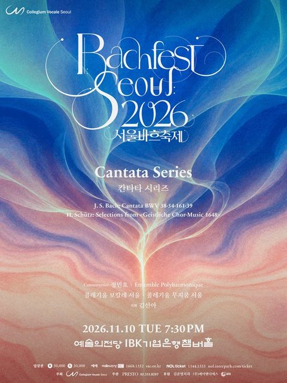
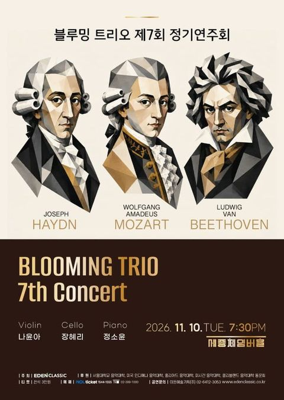
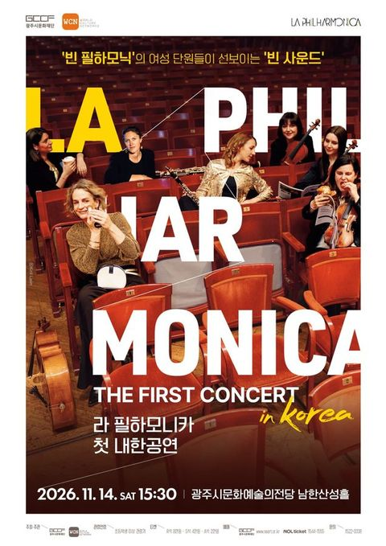
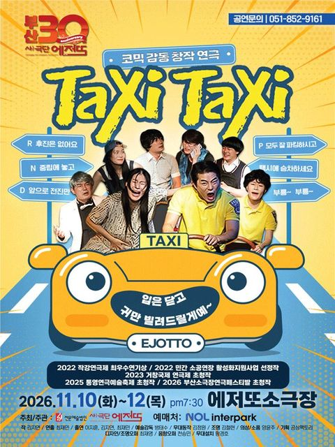
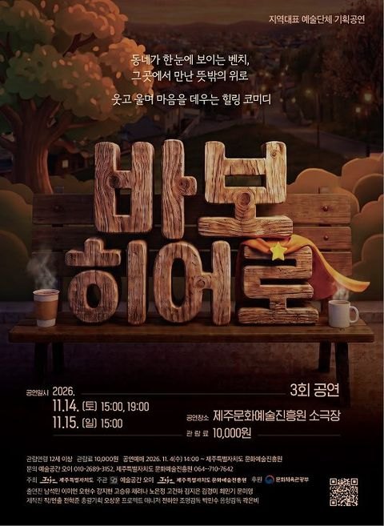

HOLT NEWS — 화제의 연구와 뉴스를 쉽게 풀어 쓰는 간행물
- 서울4°/16°보통
- 인천5°/16°보통
- 수원5°/15°
- 춘천0°/15°보통
- 원주2°/14°
- 강릉3°/16°
- 청주3°/16°
- 대전3°/16°보통
- 세종3°/16°
- 전주4°/16°
- 광주3°/18°보통
- 목포5°/16°
- 여수5°/17°
- 대구3°/16°보통
- 안동0°/16°
- 포항4°/18°
- 울산5°/18°
- 창원3°/17°
- 부산6°/18°보통
- 제주10°/16°보통
- 도쿄5°/13°
- 베이징4°/11°
- 뉴욕6°/16°
- 런던5°/10°
- 파리9°/12°
- 베를린2°/6°
- LA17°/30°
- 시카고8°/16°
- 토론토7°/15°
- 홍콩16°/22°
- 싱가포르25°/29°
- 하노이16°/20°
- 호찌민26°/29°
- 시드니16°/24°
- 두바이30°/32°
오늘의 경제
그래프는 지난 1년 흐름자료: 통계청 · 한국수출입은행 매매기준율 · 미 재무부 · 11.10 17:41 갱신

업비트와 네이버페이가 한 지붕 아래 들어가면… 공정위가 아직 없는 '원화 코인' 시장까지 들여다본 이유
업비트와 네이버페이는 하는 일이 다른데, 공정위는 두 회사가 합치면 경쟁이 줄 수 있다고 봤어요. 아직 생기지도 않은 '원화 코인' 시장까지 따져 봤어요. 그래도 결합을 막자는 게 아니라, 조건을 붙이자는 의견이에요.

미국·유럽은 멈췄는데 영국만 금리를 올렸다… 의사록에 적힌 세 가지 이유
영국 중앙은행이 11월 5일 기준금리를 4%로 올렸어요. 미국과 유로존은 한 주 전 금리를 묶었어요. 영란은행이 든 이유와 영국 가계에 언제 닿는지 따라가 봤어요.


이번 주 공연·전시·축제

전태일 56주기 초청공연 <연극 전태일-네 이름은 무엇이냐>
서강대 메리홀 대극장

제7회 김정림 구민희 피아노 듀오 콘서트
금호아트홀 연세

제27회 중구구립합창단 정기연주회
충무아트센터

서울바흐축제, 칸타타 시리즈
예술의전당 [서울] IBK기업은행챔버홀

제7회 블루밍 트리오 정기연주회
세종문화회관 세종체임버홀
음악/콘서트디 오리지널 시리즈 2026 임동혁 X 오케스트라 디 오리지널 <리부트: 라흐마니노프>
예술의전당 [서울] 콘서트홀

[파주] 클라라에게, 편지로 듣는 슈만
솔가람아트홀 대공연장

2026 부천악기은행 성과공유회
복사골문화센터 판타지아극장

[안산] 여성국극제작소 최용신, 네버엔딩 에버그린
안산문화예술의전당 달맞이극장

인천시립무용단 제93회 정기공연: 먼 눈
인천문화예술회관 대공연장

포천펫스타
경기도 포천시 신북면 아트밸리로 234

라 필하모니카 첫 내한공연
광주시문화예술의전당 남한산성홀

[정선] 정선군고창군 상호결연 2주년 기념공연 1872 고창히어로
정선아리랑센터 아리랑홀

[철원] 광명X철원 평화음악제: 여명의 동반자
철원군 화강문화센터 공연장

[원주] 제206회 원주시립교향악단 정기연주회
원주백운아트홀

뮤지컬 ＜사의 찬미＞
춘천문화예술회관 공연장

[양양] 토끼로 사는 아홉가지 어려움
양양문화복지회관 공연장

[춘천] 살아있는 박물관 속 고인돌
춘천인형극장

제79회 충주시립우륵국악단 정기연주회: 진정성 Ⅲ. 사유의 확장
충주시문화회관

[대전] 기획연주회5 세계음악시리즈 <Voice of America>
대전예술의전당 앙상블홀

[대전] 아베체 심포니 오케스트라 제 2회 정기연주회
대전예술가의집 누리홀

[보령] 늘근도둑이야기
보령문화예술회관 대공연장

[대전] 대전아트콰이어 기획연주회 3. 슬기로운 합창생활
대전시립연정국악원 큰마당

[논산] 이등병의 편지
논산아트센터(구. 논산문화예술회관) 대공연장

[대구] 화요국악무대, Beyond K-GUGAK
대구문화예술회관 비슬홀

[대구] 제8회 스케치 정기연주회: 온 더 레드카펫 (11.10)
비원뮤직홀 콘서트홀

2026 포항국제음악제, 포항시립교향악단 with 김영욱&율리안 슈테켈
포항문화예술회관 대공연장

[대구] 클래식 온: 소프라노 강혜정 리사이틀
대구콘서트하우스

[대구] 2026월드오케스트라페스티벌, 대구유스오케스트라
대구콘서트하우스

[대구] 제8회 스케치 정기연주회: 온 더 레드카펫 (11.11)
대구문화예술회관 비슬홀

[창원] 경남페스티벌앙상블 제12회 정기연주회 맥박
성산아트홀 소극장

울산시립합창단 기획연주회: 한국가곡 토크콘서트
울산문화예술회관 소공연장

[부산] 와락심포니 정기연주회: 여성, 청춘을 품다
낙동아트센터

[부산] 바로크 실내악의 정령: 파비오 비온디와 에우로파 갈란테의 사계
부산콘서트홀

[부산] 택시, 택시 Taxi Taxi
에저또소극장 [부산]

샌드아트뮤지컬 [한아이]
부산시민회관 소극장

[장성] 헤어드레서
장성문화예술회관 대공연장

[전남 광주] 전남광주통합특별시립교향악단 체임버 시리즈 VII ‘Souvenir’
광주예술의전당

[영광] 변사또 환갑잔치
영광예술의전당 대공연장

[무안] 모스틀리 오케스트라의 스토리가 있는 음악회: 내 사랑을 받아주세요
무안승달문화예술회관 대공연장

제85회 군산시립교향악단 기획연주회: Young Artist Concert
군산예술의전당 대공연장

[나주] 사형수 김대중
나주문화예술회관

[제주] 그때는 그랬지!
제주특별자치도문예회관

제주특별자치도립 서귀포관악단 2026 11월 토요힐링콘서트
서귀포예술의전당 소극장

제주특별자치도립 서귀포관악단 2026 청소년·대학생 협주곡의 밤
서귀포예술의전당 대극장

2026 제5회 제주비엔날레 허끄곡 모닥치곡 이야홍 : 변용의 기술
제주특별자치도 제주시 1100로 2894-78

2026 제5회 제주비엔날레 《허끄곡 모닥치곡 이야홍: 변용의 기술》
제주도립미술관

[제주] 바보 히어로
제주특별자치도문예회관

정규시즌 1위는 한국시리즈에서 거의 지지 않는다... 그런데 올해는 달랐다
35시즌 중 1위 팀이 진 건 다섯 번이에요. 삼성이 여섯 번째 예외를 만들었어요.

독과점 회사가 해외보다 한국에서 비싸게 받으면 제재 가능, 공정위 25년 만에 규정 손질 나서
독과점 회사가 그럴 만한 이유 없이 한국에서만 값을 높게 받으면 '가격 남용'으로 볼 수 있게 돼요.

헝가리, 공산 시절 비밀경찰 밀고자 약 6만 명 이름을 공개했다
공산 체제가 무너진 지 37년 만이에요. 이제 누구나 이름을 검색할 수 있어요.

직장인 절반 넘게 월 300만원 이상, 통계 작성 뒤 처음
월 500만원 이상 받는 사람도 17.6%로 상반기 기준 가장 많았어요. 업종에 따라 차이는 컸어요.
자료: 기상청 · MET Norway · 에어코리아 · 통계청 · 한국관광공사